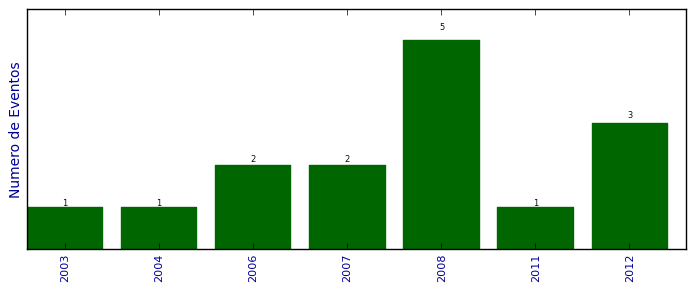

Total de participação em eventos

Número total de itens: 15
2012
| 1. | 13˚ Fórum Internacional Software Livre. 2012. (Outra). |
| 2. | IV SETINFO - Seminário do Técnico em Informática e do II STI - Seminário de Tecnologias para Internet. 2012. (Seminário). |
| 3. | XII Simpósio Brasileiro em Segurança da Informação e de Sistemas Computacionais. 2012. (Simpósio). |
2011
| 1. | 9ª Escola Regional de Redes de Computadores.Detecção de Ataques Web usando Técnicas de Detecção de Anomalias. 2011. (Outra). |
2008
| 1. | 1 Seminário de Software Livre Tchelinux. 2008. (Seminário). |
| 2. | IX Forúm Internacional Software Livre. 2008. (Congresso). |
| 3. | Salão de Iniciação Científica da UFRGS.Implementando técnica de escalonamento de tarefas ao AFDService. 2008. (Outra). |
| 4. | VII Simpósio de Informática da Região Centro do Rio Grande do Sul SIRC/RS.Implementando Técnicas de Escalonamento de Tarefas ao AFDService. 2008. (Simpósio). |
| 5. | XII Simpósio de Ensino Pesquisa e Extensão.Proposta de um Ambiente de Programação com Técnicas de Escalonamento Distribuído - SETOLF. 2008. (Simpósio). |
2007
| 1. | V Escola Regional de Redes de Computadores. 2007. (Outra). |
| 2. | VI Simpósio de Informática da Região Centro do Rio Grande do Sul - SIRC/RS. 2007. (Simpósio). |
2006
| 1. | V Simpósio de Informática da Região Centro do Rio Grande do Sul - SIRC/RS. 2006. (Simpósio). |
| 2. | X Simpósio de Ensino, Pesquisa e Extensão - SEPE.Pontos de Acesso e Vulnerabilidade de Redes Wireless na Cidade de Santa Maria. 2006. (Simpósio). |
2004
| 1. | V Forúm Internacional Software Livre. 2004. (Congresso). |
2003
| 1. | IV Forúm Internacional Software Livre. 2003. (Congresso). |
(*) Relatório criado com produções desde 1999 até HOJE
Data de processamento: 02/04/2014 18:51:09